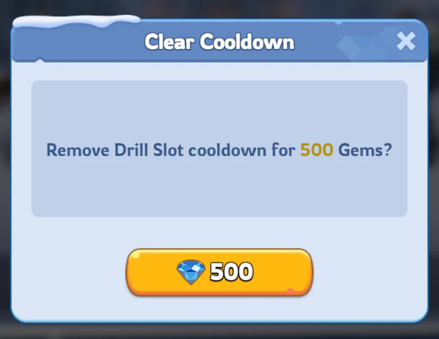

New guide, 29 October 2026. The Drill Camp is easy to misread, because it looks like a place to train heroes and works as a way to share levels. This guide explains the rule on the screen, what a reset does, and where published guides disagree.
How the Drill Camp Works
The Drill Camp lets heroes you rarely use borrow levels from your best ones. Put a hero in a Drill Slot and it levels up automatically to the lowest level among your five instructors. The camp text on the screen says exactly that, so you can check it on your own account.
Published guides place the Drill Camp at Furnace 13. Check your own city before you plan around it.
Guides agree that your five highest-level heroes become the instructors automatically. Power, rarity, stars and gear do not count, and you cannot nominate heroes. No guide says how ties between equal levels are settled.
We saw 15 slots on our screen. Slots open as your Furnace rises. Guides disagree on the schedule, and one says all 15 are open by Furnace 30, so we publish no table.
On the screen we checked, the instructors and the slotted heroes all showed Level 80. One guide ties Level 80 to Furnace 26, so check what your account allows.
The camp gives levels and nothing else. It does not add stars, skill levels or gear, so a Level 80 hero with few stars is still weak. Being an instructor only decides who sets the shared level. It does not mean that hero deserves your shards or gear first.
Why the Lowest Instructor Matters
- Slotted heroes follow the minimum. The screen says heroes in a Drill Slot auto-level to the Level Minimum of the five instructors. Your lowest instructor sets the level the slotted heroes reach.
- Raise the lowest instructor first. Spending manual XP on your top instructor does nothing for the slotted heroes if your fifth instructor is far behind. Lifting the lowest one lifts the whole camp.
- Keep the five close. A wide gap between your first and fifth instructor wastes the levels you put into the top ones, at least as far as the camp is concerned.
- Put manual XP into a stable core. Keep a steady group of heroes you expect to keep using and let the camp carry the others. You do not need to reshuffle your instructors every time your combat team changes.
Who to Put in the Slots
You have a limited number of slots and removing a hero starts a cooldown, so choose with care. One guide gives this order of priority, which is a sensible starting point and not a rule:
- 1. New heroes you are building. They catch up to your core without costing you XP.
- 2. Arena and Exploration heroes. Heroes you use every day.
- 3. Secondary combat heroes. The next layer of your march and defence teams.
- 4. Rally and event support. Heroes you use in specific events.
- 5. Gatherers. Low-rarity gatherers can stay at low levels, so they can wait.
Heroes that are deployed, for example gathering, hunting or in battle, cannot be removed from a slot or reset until they return.
Slot Cooldowns and Level Resets
Do not mix up the two prices. The 500 gem prompt we saw clears a slot cooldown. It is not a price for a Level Reset.

This is what our screen offers for a slot on cooldown: remove the Drill Slot cooldown for 500 gems.
It is a price for the slot cooldown only, not for a Level Reset. Three older guides say gems cannot clear the cooldown, so trust what your own screen shows.
Screenshot from our own account, 30 October 2026. Game screens change, so check yours.

A Plan That Works for Most Players
- Settle on a core. Aim for a stable group of five that you expect to keep using and put your manual XP into them. This is a convenient default, not a requirement.
- Level the weakest of the five. Check the lowest instructor before you spend XP on anyone else.
- Fill the slots by priority. Use the order above and avoid moving heroes in and out without a reason.
- Recover XP from heroes you stopped using. A Level Reset refunds the Hero XP, which you can put into your core five. Read the reset screen first so you know what you get back.
- Swap an instructor by resetting it. Guides use a reset to drop an instructor out of the top five and bring another hero in. Test it with one hero before you reset several.
Where the Guides Disagree
- Slot unlock schedule. Guides give different Furnace levels. One says all 15 slots are open by Furnace 30. We publish no table.
- Gems and the slot cooldown. Three older guides say gems cannot clear it. The screen we checked offers a 500 gem prompt.
- Level 80 and the Furnace. One guide says Level 80 needs Furnace 26. Others do not give a requirement.
- Ties between instructors. No guide documents how equal levels are settled.
- The reset restriction. Two guides describe a 24 hour wait and a gem option. No price or exact rule is published.
What Most Players Get Wrong
Ignoring the fifth instructor. Your lowest instructor sets the camp level, so a weak fifth hero holds everyone back.
Resetting the wrong hero. A reset sends the hero to Level 1. Read the screen and check who you are about to reset.
Treating a slotted hero as finished. The camp gives levels only. Stars, skills and gear still need your resources.
Removing a hero just before you need the slot. Removal starts a 24 hour cooldown on that slot.
Confusing the two prices. The 500 gem prompt clears a slot cooldown. It does not pay for a Level Reset.
Check on your own screens. Your slot count, your unlock level, which heroes are your five instructors, the price shown on the cooldown prompt and what a Level Reset says it will refund. Some details here come from published guides and could not be confirmed.